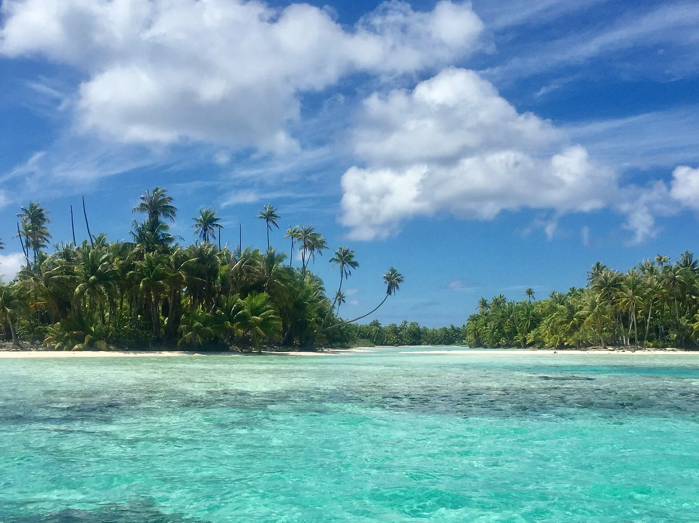

Passe de Tiputa
Rangiroa, Polynésie française · plongée

Passe de l’un des plus grands atolls du monde, où l’on dérive avec les requins et les dauphins. Plongée de légende.
- Lieu
- Rangiroa, Polynésie française
- Niveau
- Expert
- Activités
- plongée
- Type d'eau
- Mer / océan
- Coordonnées
- -14.97, -147.63 (position approximative du secteur)
Dangers à connaître
- Courant très puissant.
- Requins nombreux.
Le conseil d'Ocean Buddy
Plonge avec le courant entrant, accompagné d’un club local.
Ouvrir dans Ocean Buddy Télécharger sur l'App Store
Source : Fiche Ocean Buddy · septembre 2026 · à vérifier localement.